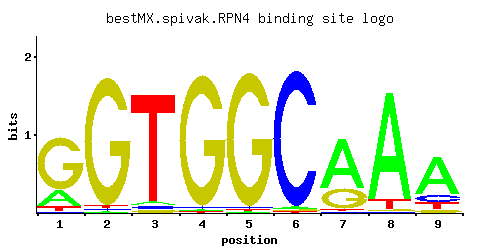

RPN4
YDL020C, UFD5, SON1
Transcription factor that stimulates expression of proteasome genes; Rpn4p levels are in turn regulated by the 26S proteasome in a negative feedback control mechanism; RPN4 is transcriptionally regulated by various stress responses
Best-performing DNA-binding model.

View and copy the recommended matrices ↘
A | 0.214 0.009 0.030 0.010 0.009 0.014 0.683 0.909 0.699 C | 0.007 0.013 0.026 0.017 0.012 0.974 0.013 0.007 0.133 G | 0.728 0.960 0.025 0.966 0.971 0.007 0.284 0.007 0.060 T | 0.051 0.018 0.919 0.007 0.009 0.005 0.021 0.077 0.109
A | 21 0 3 1 0 1 68 90 69 C | 0 1 2 1 1 97 1 0 13 G | 72 96 2 96 97 0 28 0 6 T | 5 1 91 0 0 0 2 7 10
A | -0.40 -3.57 -2.37 -3.47 -3.57 -3.13 0.76 1.04 0.78 C | -3.25 -2.63 -1.93 -2.36 -2.71 1.69 -2.63 -3.25 -0.30 G | 1.40 1.67 -1.97 1.68 1.69 -3.25 0.46 -3.25 -1.10 T | -1.84 -2.88 1.05 -3.82 -3.57 -4.16 -2.72 -1.42 -1.08
Alternative candidate matrices 12
Historical matrix candidates from the original ScerTF database. Expand a source to inspect its original logo, scores, and matrix values.
RPN4Badis et. al.P = 3.47e-47View matrix ↘
RPN4_AFoat et. al.P = 5.99e-54View matrix ↘
RPN4_BFoat et. al.P = 2.04e-77View matrix ↘
RPN4_CFoat et. al.P = 0.0003199View matrix ↘
RPN4_AFordyce et. al.P = 3.09e-37View matrix ↘
RPN4_BFordyce et. al.P = 2.25e-32View matrix ↘
RPN4_CFordyce et. al.P = 4.49e-25View matrix ↘
RPN4Harbison et. al.P = 7.81e-82View matrix ↘
RPN4Macisaac et. alP = 3.20e-83View matrix ↘
RPN4Pachkov et alP = 2.15e-80View matrix ↘
RPN4Zhu et. al.P = 1.28e-06View matrix ↘
RPN4Zhao and StormoP = 1View matrix ↘
Gene-level annotations and interactions.
Genes bound in ChIP-chip experiments 176 genes
YAL001C, YAL003W, YAL005C, YAR007C, YAR008W, YAR009C, YBL001C, YBL087C, YBL109W, YBL111C, YBL112C, YBL113C, YBR008C, YBR065C, YBR109C, YBR110W, YBR128C, YBR143C, YBR164C, YBR165W, YBR185C, YBR186W, YBR188C, YBR189W, YCL002C, YCL006C, YCL007C, YCL008C, YCL009C, YCL010C, YCR002C, YCR004C, YCR005C, YCR006C, YCR008W, YCR012W, YCR023C, YCR099C, YCR100C, YCR105W, YDL101C, YDL108W, YDL109C, YDL114W, YDL115C, YDR064W, YDR066C, YDR071C, YDR117C, YDR118W, YDR149C, YDR151C, YDR152W, YDR394W, YDR426C, YDR427W, YDR461W, YDR523C, YDR526C, YDR543C, YDR544C, YDR545W, YEL003W, YEL022W, YEL023C, YER021W, YFL023W, YFL024C, YFL049W, YFL050C, YGL115W, YGL156W, YGL159W, YGL178W, YGL195W, YGR004W, YGR047C, YGR048W, YGR066C, YGR221C, YGR263C, YGR265W, YGR289C, YHR067W, YHR068W, YHR084W, YHR091C, YHR123W, YHR129C, YIL075C, YIL085C, YIL086C, YIL087C, YIL150C, YJL012C, YJL037W, YJL038C, YJL094C, YJL155C, YJR098C, YJR099W, YJR132W, YJR154W, YKL009W, YKL010C, YKL026C, YKL049C, YKL123W, YKL124W, YKL161C, YKL177W, YKL179C, YKR060W, YKR073C, YLL035W, YLL036C, YLL038C, YLL065W, YLR035C-A, YLR166C, YLR167W, YLR261C, YLR262C, YLR273C, YLR274W, YLR286C, YLR345W, YLR368W, YLR412W, YLR440C, YMR060C, YMR061W, YMR091C, YMR131C, YMR149W, YMR150C, YMR151W, YMR152W, YMR186W, YMR229C, YMR230W, YMR239C, YMR320W, YNL083W, YNL084C, YNL087W, YNL111C, YNL145W, YNL164C, YNL337W, YNL338W, YNL339C, YNR011C, YNR012W, YOL077W-A, YOL078W, YOL080C, YOR020C, YOR043W, YOR058C, YOR089C, YOR128C, YOR215C, YOR236W, YOR239W, YOR240W, YOR251C, YOR252W, YOR318C, YOR319W, YOR353C, YPL257W, YPL257W-A, YPL257W-B, YPR109W, YPR161C
Genes affected by TF deletion 221 genes
YBR006W, YDR370C, YKR012C, YOR259C, YAL005C, YDL126C, YDL100C, YDR222W, YGL009C, YGL011C, YGL013C, YKL043W, YNL241C, YPL019C, YER142C, YNL047C, YNL078W, YOL011W, YPL177C, YDL097C, YJL082W, YOR007C, YPL014W, YPL016W, YBR092C, YCR082W, YFR003C, YFR005C, YGR031W, YHR053C, YHR055C, YHR027C, YLR374C, YMR103C, YDR280W, YGR244C, YGR250C, YKL139W, YMR314W, YBR067C, YBR129C, YDR461W, YFR004W, YFR006W, YFL044C, YJL017W, YKL015W, YLL061W, YLL002W, YMR104C, YNL146W, YBL058W, YDR281C, YER056C, YER029C, YIL015W, YJL144W, YMR315W, YER042W, YCL057W, YCR021C, YHR005C, YML123C, YML125C, YNL089C, YOR229W, YOR261C, YOR267C, YBR231C, YBR169C, YER004W, YFR040W, YFR044C, YKL051W, YKL117W, YLR412W, YCL056C, YDR011W, YDR077W, YIL117C, YNL090W, YJR148W, YGL048C, YGR127W, YDL007W, YGR007W, YJL026W, YLR348C, YLR350W, YNL155W, YOL150C, YOR355W, YER038C, YGR252W, YHR215W, YKL145W, YOR107W, YPL092W, YFL014W, YJL163C, YBR069C, YCR083W, YFR010W, YGR008C, YHR094C, YIR035C, YLR375W, YLR349W, YAR071W, YCL027W, YBR296C, YER064C, YGR253C, YJL158C, YKL210W, YKL150W, YML032C, YML092C, YNR038W, YER060W, YGL062W, YHL026C, YKR093W, YML131W, YBR173C, YBR175W, YDL144C, YFR050C, YFR052W, YGR138C, YLR040C, YMR236W, YER158C, YER130C, YML128C, YMR008C, YBR174C, YGR135W, YGR139W, YKL120W, YLR041W, YLR073C, YLR413W, YPL061W, YDL048C, YFL026W, YHR037W, YKL033W-A, YNL191W, YOL152W, YOL122C, YOL126C, YOL158C, YBL041W, YCL038C, YBR141C, YBR083W, YDR172W, YFL027C, YFR022W, YGR048W, YIR043C, YJL001W, YIR018W, YLR387C, YMR148W, YNL160W, YOL151W, YOL155C, YOR362C, YBL042C, YDL241W, YDR297W, YER094C, YKL216W, YNR044W, YBR054W, YDR394W, YIL170W, YLR297W, YMR002W, YMR067C, YNL046W, YDL124W, YGR117C, YHR136C, YHR200W, YJL079C, YKL070W, YMR182C, YER012W, YDR055W, YDR033W, YDR427W, YFL004W, YGL255W, YMR062C, YMR034C, YMR007W, YNL045W, YOL038W, YPL230W, YDL147W, YEL037C, YER021W, YGL032C, YLR049C, YLR452C, YMR181C, YOR307C, YKL196C, YMR276W, YBR089W, YGR052W, YHR047C, YMR127C, YOR306C, YOR338W, YIL075C, YML048W, YML109W
Genes supported by both experiments 8 genes
YAL005C, YDR394W, YDR427W, YDR461W, YER021W, YGR048W, YIL075C, YLR412W
Predicted TF–TF partners 4 genes
ABF1, MET31, SUT1, YDR026C